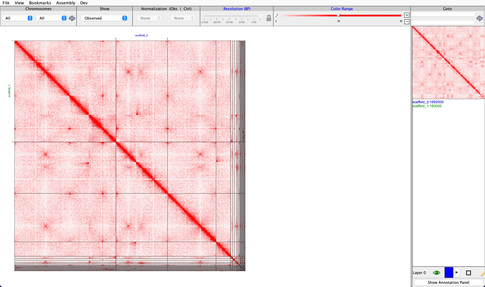

Chapter 10 Optional Exercises
10.1 Introduction
Here is another PacBio Hifi + Illumina Hi-C dataset for you to practice on. This is a fungus, a type of budding yeast called Metschnikowia zobellii
Follow all the steps from pre-assembly through to scaffolding and see if the same steps work here or if you need to do anything different.
Hint: We recommend subsampling the Pacbio Hifi read set to 10 percent of the raw data, and we have already subsampled the Illumina data to 1M read pairs so that this exercise will run in a reasonable amount of time in this course. In reality you would run the whole dataset.
10.2 Preassembly
Make sure you are in the . useassembly terminal window.
READACC=ERR9588941mkdir -p ~/$READACC/1-preassembly
cd ~/$READACC/1-preassembly
# change these to actual location:
ln -s /pub14/tea/nsc206/NEOF/Euk_assembly/data/ERR9588941.fastq.gz
ln -s /pub14/tea/nsc206/NEOF/Euk_assembly/data/ERR9503460.1m.1.fq.gz
ln -s /pub14/tea/nsc206/NEOF/Euk_assembly/data/ERR9503460.1m.2.fq.gz
seqkit stats $READACC.fastq.gz
kmc -cs2000 -k21 ${READACC}.fastq.gz ${READACC}k21 .
kmc_tools transform ${READACC}k21 histogram ${READACC}k21.histo
# upload the .histo file in http://qb.cshl.edu/genomescope/genomescope2.0/
How does this compare to the known size of the assembly for Metschnikowia zobellii? (You can look this up on NCBI!)
10.3 Assembly
mkdir -p ~/$READACC/2-assembly
cd ~/$READACC/2-assembly
seqtk sample ../1-preassembly/${READACC}.fastq.gz 0.10 | gzip -c > ${READACC}.10p.fastq.gz
hifiasm -l 0 -t 16 -o ${READACC}_hifiasm10pl0 ${READACC}.10p.fastq.gz
# should take ~2 min
# you can also try -l 3 and see the difference, remember to change the -o as well
# take care with the file names. Here we have added the suffix `hifiasm` for the assembler, `10p` to indicate that we have used 10% of the data and `l0` to indicate we have set the `l` (lower case letter l) paramter to `0`.
awk '/^S/{print ">"$2;print $3}' ${READACC}_hifiasm10pl0.bp.p_ctg.gfa > ${READACC}_hifiasm10pl0.bp.p_ctg.fa10.4 Assessment
mkdir -p ~/$READACC/3-assessment
cd ~/$READACC/3-assessment
ln -s ../2-assembly/${READACC}_hifiasm10pl0.bp.p_ctg.fa
seqkit stats -a *.faMove into your . usetiara terminal window.
READACC=ERR9588941
cd ~/$READACC/3-assessment
ASSEMBLY=${READACC}_hifiasml0pl0.bp.p_ctg.fa
tiara -i $ASSEMBLY -o $ASSEMBLY.tiara -t 16 --pr --tf allMove back into your . useassembly window.
seqkit stats -a *$ASSEMBLY
# note large number of contigs
busco \
-i ${ASSEMBLY} \
-l saccharomycetes_odb10 \
-m geno \
-o ${ASSEMBLY}_saccharomycetes_odb10 \
--cpu 16
# purge_dups
# no bacteria to remove, so keep them all
ln -s ../1-preassembly/${READACC}.fastq.gz
READS=${READACC}.fastq.gz
CONTIGS=$ASSEMBLY
CPU=16
minimap2 -t $CPU -x map-hifi $CONTIGS $READS | gzip -c - >${CONTIGS}.paf.gz
pbcstat ${CONTIGS}.paf.gz
calcuts PB.stat > ${CONTIGS}_cutoffs 2> ${CONTIGS}_calcults.log
split_fa $CONTIGS >${CONTIGS}.split
minimap2 -t $CPU -xasm5 -DP ${CONTIGS}.split ${CONTIGS}.split | gzip -c - >${CONTIGS}.split.self.paf.gz
purge_dups -2 -T ${PREFIX}_cutoffs -c PB.base.cov ${CONTIGS}.split.self.paf.gz >${CONTIGS}_dups.bed 2>${CONTIGS}_purge_dups.log
get_seqs -e ${CONTIGS}_dups.bed $CONTIGS
mv purged.fa ${CONTIGS}_purged.fa
mv hap.fa ${CONTIGS}_hap.fa
seqkit stats ${CONTIGS} ${CONTIGS}_purged.fa ${CONTIGS}_hap.fa
# this time a lot more sequence got purged, as this was a more heterozygous assembly, as we saw in genomescope
10.5 Mitochondrial Assembly
Use the identified mitochondrial contig from the tiara assessment.
First move into your . usemitohifi terminal window.
READACC=ERR9588941
mkdir -p ~/$READACC/4-mito
cd ~/$READACC/4-mito
cp ~/$READACC/3-assessment/mitochondrion_ERR9588941_hifiasm10pl0.bp.p_ctg.fa .
# Find closely related mitogenome
python /pub14/tea/nsc206/git_installs/MitoHiFi/findMitoReference.py \
--species "Metschnikowia zobellii" \
--outfolder ./ \
--min_length 16000
# Run MitoHiFi
python /pub14/tea/nsc206/git_installs/MitoHiFi/mitohifi.py \
-c mitochondrion_ERR9588941_hifiasm10pl0.bp.p_ctg.fa \
-f NC_057617.1.fasta -g NC_057617.1.gb \
-t 1 -o 3
# Note we have used a different mitochondrial genetic code - check this on the NCBI taxonomy page for the study species.
feh final_mitogenome.annotation.png
Yeast can have mitochondrial genomes up to 100 Kb.
10.6 Scaffolding
Move into your . usehic terminal window.
READACC=ERR9588941
mkdir -p ~/$READACC/5-scaffolding
cd ~/$READACC/5-scaffolding
ln -s ../3-assessment/${READACC}_hifiasm10pl0.bp.p_ctg.fa_purged.fa
ln -s /pub14/tea/nsc206/NEOF/Euk_assembly/data/ERR9503460.1m.1.fq.gz
ln -s /pub14/tea/nsc206/NEOF/Euk_assembly/data/ERR9503460.1m.2.fq.gz
REF=${READACC}_hifiasm10pl0.bp.p_ctg.fa_purged.fa
FASTQ1=ERR9503460.1m.1.fq.gz
FASTQ2=ERR9503460.1m.2.fq.gz
PREFIX=purged1m
CPU=16
MEM=100G
bwa index $REF
samtools faidx $REF
bwa mem -t $CPU $REF $FASTQ1 $FASTQ2 | samtools view -b - > $PREFIX.bam
yahs $REF $PREFIX.bam -o $PREFIX
juicer pre ${PREFIX}.bin ${PREFIX}_scaffolds_final.agp $REF.fai \
| sort -k2,2d -k6,6d --parallel=$CPU -S$MEM \
| awk 'NF' \
> ${PREFIX}_alignments_sorted.txt
awk '/^>/{if (l!="") print l; printf "%s\t", $1; l=0; next}{l+=length($0)}END{print l}' ${PREFIX}_scaffolds_final.fa \
| sed "s/>//" \
> ${PREFIX}_scaffolds_final.fa_chromosome_sizes.txt
java -jar -Xmx$MEM /pub14/tea/nsc206/jars/juicebox/juicer_tools_2.15.08.jar pre --threads $CPU ${PREFIX}_alignments_sorted.txt ${PREFIX}.hic ${PREFIX}_scaffolds_final.fa_chromosome_sizes.txt
java -jar /pub14/tea/nsc206/jars/juicebox/juicebox_2.15.08.jarYou should see something that looks like this: 